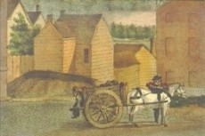

Find out how this important early American city actually worked in an entertaining and informative public program sponsored by the New York State Museum and presented by community historian Stefan Bielinski in the Museum Theater at the Cultural Education Center in Albany.
Meet early Albany's pioneer businessmen, its skippers and shippers, the tradesmen and artisans who made and repaired much of what people used, lived in, and ate, and also the women, children, and other helpers who were important parts of the family and community economies.
This interactive presentation features the pop anthem Albany: A Song of Community to provide a musical and visual overview of the city's history and serve as a catalyst for audience exploration and discussion.
Tinker - Trader - Tailor is a free public program celebrating Labor History Month and is held in conjunction with the New York State Labor History Association. It is one of several historical programs offered by the Colonial Albany Project. School groups should contact the State Museum regarding theater bookings.
Cartman on upper State Street during the early 1800s. Detail from a watercolor by James Eights.
An eighteenth-century saddler's shop. From Denis Diderot's L'Encyclopedie, ou Dictionaire Raisonne des Sciences, des Arts et des Metiers (1751-72).
Abraham Wendell with his mill on the Beaverkill in the background during the mid-1700s. Detail from a watercolor by James Eights.